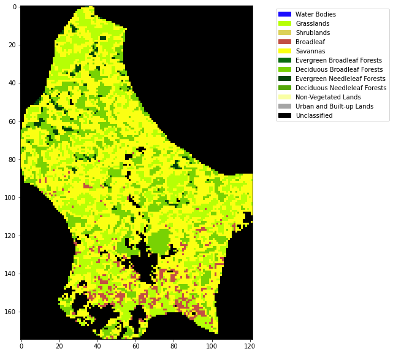

043 Weighted interpolation
Introduction
Purpose
We have seen in 042_Weighted_smoothing_and_interpolation how we can regularise a dataset using colvolution filtering. We investigate and apply that now to allow us to provide gap-filled datasets.
Prerequisites
You must make sure you can recall the details of the work covered in 040_GDAL_mosaicing_and_masking and understand the material in 042_Weighted_smoothing_and_interpolation. You will also need to know how to do graph plotting, including sub-figures and errorbars, and image display.
Test
You should run a NASA account test if you have not already done so.
Smoothing
In convolution, we combine a signal $y$ with a filter $f$ to achieve a filtered signal. For example, if we have an noisy signal, we will attempt to reduce the influence of high frequency information in the signal (a 'low pass' filter, as we let the low frequency information pass).
We can perform a weighted interpolation by:
- numerator = smooth( signal $\times$ weight)
- denominator = smooth( weight)
- result = numerator/denominator
We will now load up a dataset (LAI for LU for 2019) to explore smoothing. We will use the function get_lai_data that we have previously developed:
from geog0111.get_lai_data import get_lai_data
import numpy as np
# load some data
tile = ['h17v03','h18v03','h17v04','h18v04']
year = 2019
fips = "LU"
lai,std,doy = get_lai_data(year,tile,fips)
# sort the weight as in the exercio
std[std<1] = 1
weight = np.zeros_like(std)
mask = (std > 0)
weight[mask] = 1./(std[mask]**2)
weight[lai > 10] = 0.
Exercise 1
- Write a function
get_weightthat takes as argument:lai : MODIS LAI dataset std : MODIS LAI uncertainty dataset
and returns an array the same shape as lai/std of per-pixel pixel weights * Read a MODIS LAI dataset, calculate the weights, and print some statistics of the weights
We can plot the dataset for a given pixel ((107,72) here) to see some of the features of the data:
import matplotlib.pyplot as plt
# look at some stats
print(weight.min(),weight.max(),doy.min(),doy.max())
error = np.zeros_like(weight)
error[weight>0] = np.sqrt(1./(weight[weight>0] )) * 1.97
p0,p1 = (107,72)
x_size,y_size=(10,5)
shape=(10,10)
fig, axs = plt.subplots(1,1,figsize=(x_size,y_size))
x = doy
axs.errorbar(x,lai[:,p0,p1],yerr=error[:,p0,p1]/10)
axs.set_title(f'{p0} {p1}')
# ensure the same scale for all
axs.set_ylim(0,7)
axs.set_xlabel('DOY 2019')
axs.set_ylabel('LAI')
0.0 1.0 1 365
Text(0, 0.5, 'LAI')

The LAI data, that we expect to be smoothly varying in time, has unrealistic high frequency variations (it goes up and down too much). It also has data missing for some days (e.g. when too cloudy), and is often, in the winter, highly uncertain.
Despite that, we can 'see' that there should be a smoothly varying function that can go through those data points quite well. This is what we want to achieve with our regularisation.
Smoothing
We can generate a Gaussian filter for our smoothing. The width of the filter, that in turn controls the degree of smoothing, is set by the parameter sigma. Recall the impact of the filter width from the material in the previous session. We will use a value of 5 here, but you should not assume that that will always be appropriate. We will discuss how to experiment with this later in this session.
import scipy
import scipy.ndimage.filters
# sigma controls the width of the smoother
sigma = 5
x = np.arange(-3*sigma,3*sigma+1)
gaussian = np.exp((-(x/sigma)**2)/2.0)
plt.plot(x,gaussian)
[<matplotlib.lines.Line2D at 0x7fba6be4e7d0>]
We now perform the weighted regularisation by convolution.
numerator = scipy.ndimage.filters.convolve1d(lai * weight, gaussian, axis=0,mode='wrap')
denominator = scipy.ndimage.filters.convolve1d(weight, gaussian, axis=0,mode='wrap')
# avoid divide by 0 problems by setting zero values
# of the denominator to not a number (NaN)
denominator[denominator==0] = np.nan
interpolated_lai = numerator/denominator
We can plot the results in various ways:
p0,p1 = (107,72)
x_size,y_size=(10,5)
fig, axs = plt.subplots(1,1,figsize=(x_size,y_size))
x = doy
axs.plot(x,interpolated_lai[:,p0,p1],'r--',label='smoothed LAI')
axs.plot(x,lai[:,p0,p1],'+',label='LAI')
axs.plot(x,weight[:,p0,p1],'+',label='weight')
axs.set_title(f'{p0} {p1}')
# ensure the same scale for all
axs.set_ylim(0,7)
axs.set_xlabel('DOY 2019')
axs.set_ylabel('LAI')
axs.legend(loc='best')
<matplotlib.legend.Legend at 0x7fba639eaf90>

# Plot the interpolated_lai
import matplotlib.pyplot as plt
shape=(12,8)
x_size,y_size=(20,30)
fig, axs = plt.subplots(*shape,figsize=(x_size,y_size))
axs = axs.flatten()
plt.setp(axs, xticks=[], yticks=[])
for i in range(interpolated_lai.shape[0]):
im = axs[i].imshow(interpolated_lai[i],vmax=7,cmap=plt.cm.inferno_r,\
interpolation='nearest')
axs[i].set_title(doy[i])
fig.colorbar(im, ax=axs[i])

import matplotlib.pyplot as plt
x_size,y_size=(20,20)
shape=(10,10)
fig, axs = plt.subplots(*shape,figsize=(x_size,y_size))
plt.setp(axs, xticks=[], yticks=[])
pixel = (100,70)
x = doy
for i in range(shape[0]):
p0 = pixel[0] + i
for j in range(shape[1]):
p1 = pixel[1] + j
axs[i,j].plot(x,interpolated_lai[:,p0,p1])
axs[i,j].plot(x,lai[:,p0,p1],'+')
axs[i,j].set_title(f'{p0} {p1}')
# ensure the same scale for all
axs[i,j].set_ylim(0,7)
This achieves very plausible results for this dataset. The time series plots are particularly useful in judging this: we see that the smoothed signal describes the cloud of observations well. Further, there are no gaps in the data. A visual assessment of this kind is a useful tool for deciding if we are on the right track with our regularisation. We have not justified the filter width value we have used though.
Exercise 2
- Write a function
regularisethat takes as argument:lai : MODIS LAI dataset weight : MODIS LAI weight sigma : Gaussian filter width
and returns an array the same shape as lai of regularised LAI * Read a MODIS LAI dataset and regularise it * Plot original LAI, and regularised LAI for varying values of sigma, for one pixel
Hint: You will find such a function useful when completing Part B of the assessed practical, so it is well worth your while doing this exercise.
data mask
Although these datasets look complete when we plot them, it is still possible that some pixels have no valid data points or invalid pixels. Earlier, we set
denominator[denominator==0] = np.nan
so we would expect invalid pixels to contain np.nan. We can build a mask for these pixels, for example by summing along the time axis (axis 0):
mask = np.sum(interpolated_lai,axis=0)
This will build a 2D dataset that is np.nan if invalid. We can then use ~np.isnan to build a boolean mask. The ~ symbol is the same as doing np.logical_not() in this context. It will be True where invalid, and False where valid:
# reload the dataset
from geog0111.get_lai_data import get_lai_data
from geog0111.get_weight import get_weight
from geog0111.regularise import regularise
lai,std,doy = get_lai_data(year,tile,fips)
weight = get_weight(lai,std)
interpolated_lai = regularise(lai,weight,5.0)
mask = ~np.isnan(np.sum(interpolated_lai,axis=0))
x_size,y_size=(10,10)
fig, axs = plt.subplots(1,1,figsize=(x_size,y_size))
x = doy
axs.imshow(mask)
axs.set_title('data mask')
Text(0.5, 1.0, 'data mask')
Land cover
We have generated a gap-filled LAI dataset, and have checked the quality of it. Lets now load some land cover data so that we can examine LAI as a function of land cover class:
We will use LC_Type3 as this is the classification associated with the LAI product. You will find a CSV file defining the LC types in data/LC_Type3_colour.csv.
from geog0111.modis import Modis
# LU
kwargs = {
'tile' : ['h17v03', 'h18v03','h17v04', 'h18v04'],
'product' : 'MCD12Q1',
}
year = 2019
doy = 1
# get the data
modis = Modis(**kwargs)
warp_args = {
'dstNodata' : 255,
'format' : 'MEM',
'cropToCutline' : True,
'cutlineWhere' : "FIPS='LU'",
'cutlineDSName' : 'data/TM_WORLD_BORDERS-0.3.shp'
}
# specify day of year (DOY) and year
lcfiles = modis.get_modis(year,doy,warp_args=warp_args)
lcfiles.keys()
dict_keys(['LC_Prop1', 'LC_Prop1_Assessment', 'LC_Prop2', 'LC_Prop2_Assessment', 'LC_Prop3', 'LC_Prop3_Assessment', 'LC_Type1', 'LC_Type2', 'LC_Type3', 'LC_Type4', 'LC_Type5', 'LW', 'QC', 'bandnames'])
import pandas as pd
# read the colour data
lc_Type3 = pd.read_csv('data/LC_Type3_colour.csv')
lc_Type3
| code | colour | class | description | |
|---|---|---|---|---|
| 0 | 0 | #1c0dff | Water Bodies | at least 60% of area is covered by permanent w... |
| 1 | 1 | #b6ff05 | Grasslands | dominated by herbaceous annuals (<2m) includin... |
| 2 | 2 | #dcd159 | Shrublands | shrub (1-2m) cover >10%. |
| 3 | 3 | #c24f44 | Broadleaf | Croplands: bominated by herbaceous annuals (<2... |
| 4 | 4 | #fbff13 | Savannas | between 10-60% tree cover (>2m). |
| 5 | 5 | #086a10 | Evergreen Broadleaf Forests | dominated by evergreen broadleaf and palmate t... |
| 6 | 6 | #78d203 | Deciduous Broadleaf Forests | dominated by deciduous broadleaf trees (canopy... |
| 7 | 7 | #05450a | Evergreen Needleleaf Forests | dominated by evergreen conifer trees (canopy >... |
| 8 | 8 | #54a708 | Deciduous Needleleaf Forests | dominated by deciduous needleleaf (larch) tree... |
| 9 | 9 | #f9ffa4 | Non-Vegetated Lands | at least 60% of area is non-vegetated barren (... |
| 10 | 10 | #a5a5a5 | Urban and Built-up Lands | at least 30% impervious surface area including... |
| 11 | 255 | #000000 | Unclassified | NaN |
# generate matplotlib cmap and norm objects from these
# as in session 024
import matplotlib
import matplotlib.patches
cmap = matplotlib.colors.\
ListedColormap(list(lc_Type3['colour']))
norm = matplotlib.colors.\
BoundaryNorm(list(lc_Type3['code']), len(lc_Type3['code']))
# set up the legend
legend_labels = dict(zip(list(lc_Type3['colour']),list(lc_Type3['class'])))
patches = [matplotlib.patches.Patch(color=c, label=l)
for c,l in legend_labels.items()]
import gdal
import numpy as np
# read the LC_Type3 dataset
g = gdal.Open(lcfiles['LC_Type3'])
land_cover = g.ReadAsArray()
# If the unique values dont correspond with
# what we expect for the land cover codes, there
# has been some error in processing
print(np.unique(land_cover))
print(lcfiles['LC_Type3'])
[ 1 3 4 5 6 7 10 255]
/shared/groups/jrole001/geog0111/work/MCD12Q1/data.LC_Type3._h17v03_h18v03_h17v04_h18v04_.2019.001.001_warp.vrt
# plot
import matplotlib.pyplot as plt
x_size,y_size=(10,10)
fig, axs = plt.subplots(1,figsize=(x_size,y_size))
im = axs.imshow(land_cover,cmap=cmap,norm=norm,interpolation='nearest')
plt.legend(handles=patches,
bbox_to_anchor=(1.6, 1),
facecolor="white")
<matplotlib.legend.Legend at 0x7fba5d278a90>

Exercise 3
- Write a function
get_lcthat takes as argument:year : int tile : list of MODIS tiles, list of st fips : country FIPS code, str
and returns a byte array of land cover type LC_Type3 for the year and country specified
* In your function, print out the unique values in the landcover dataset to give some feedback to the user
* Write a function plot_LC_Type3 that will plot LC_Type3 data with an appropriate colourmap.
* Produce a plot of the land cover of Belgium for 2018
We can now consider masking both for valid pixels and for a particular land cover type.
# reload the dataset
from geog0111.get_lai_data import get_lai_data
from geog0111.get_weight import get_weight
from geog0111.regularise import regularise
year = 2019
tile = ['h17v03', 'h18v03','h17v04', 'h18v04']
fips = "LU"
lc = get_lc(year,tile,fips)
lc_Type3 = pd.read_csv('data/LC_Type3_colour.csv')
lai,std,doy = get_lai_data(year,tile,fips)
weight = get_weight(lai,std)
interpolated_lai = regularise(lai,weight,5.0)
class codes: [ 1 3 4 5 6 7 10 255]
# get the code for Grasslands
# might be easier to look in the table ...
# but we can extract it
classy = 'Grasslands'
code = int(lc_Type3[lc_Type3['class'] == classy]['code'])
print(f'code for {classy} is {code}')
code for Grasslands is 1
# code
code_mask = (land_cover == code)
valid_mask = ~np.isnan(np.sum(interpolated_lai,axis=0))
# combine
mask = np.logical_and(code_mask,valid_mask)
masked_lai = interpolated_lai[:,mask]
print(masked_lai.shape)
(92, 2661)
Notice how we used interpolated_lai[:,mask] to apply the mask to the last 2 dimensions of the `interpolated_laia dataset. The result is 2D, the first dimension being the number of time samples.
Now, take the mean, over axis 1:
mean_lai = np.mean(masked_lai,axis=(1))
median_lai = np.median(masked_lai,axis=(1))
max_lai = np.max(masked_lai,axis=(1))
min_lai = np.min(masked_lai,axis=(1))
# check they have the same shape before we plot them!
masked_lai.shape,doy.shape
((92, 2661), (92,))
# plot
x_size,y_size=(10,5)
fig, axs = plt.subplots(1,1,figsize=(x_size,y_size))
x = doy
axs.plot(x,mean_lai,label=f"{classy} mean")
axs.plot(x,median_lai,label=f"{classy} median")
axs.plot(x,max_lai,label=f"{classy} max")
axs.plot(x,min_lai,label=f"{classy} min")
axs.set_title(f'smoothed LAI LU')
# ensure the same scale for all
axs.set_ylim(0,7)
axs.set_ylabel('LAI')
axs.set_xlabel('DOY 2019')
axs.set_xlim(0,365)
axs.legend(loc='upper right')
<matplotlib.legend.Legend at 0x7fba5ce1cf90>

Formative assessment
To get some feedback on how you are doing, you should complete and submit the formative assessment 065 LAI.
Summary
From this session, you should be able to acquire a MODIS timeseries dataset and associated land cover map. You should be able to treat the data, so that by defining a weight for weach observation, you can produce a regularised (smoothed, interpolated) dataset from original noisy observations. In this case, we used variable weighting, according to an uncertainty measure, but if that is not available, you can simply use a weight of 1 for a valid observation and 0 when there is no valid value.
You should then be able to calculate statistics from the data. You should be capable of doing this for any MODIS geophysical variable, and also of developing functiuons that bring some of these ideas together into more compact, reusable code.
Remember:
| function | comment |
|---|---|
scipy.ndimage.filters |
scipy filters |
zscipy.ndimage.filters.convolve1d(data,filter) |
1D convolution of filter with data. Keywords : axis=0,mode='wrap' |
from geog0111 import regularise
help(regularise)
Help on module geog0111.regularise in geog0111:
NAME
geog0111.regularise
FUNCTIONS
regularise(lai, weight, sigma)
takes as argument:
lai : MODIS LAI dataset: shape (Nt,Nx,Ny)
weight : MODIS LAI weight: shape (Nt,Nx,Ny)
sigma : Gaussian filter width: float
returns an array the same shape as
lai of regularised LAI. Regularisation takes place along
axis 0 (the time axis)
FILE
/nfs/cfs/home3/Uucfa6/ucfalew/geog0111/notebooks/geog0111/regularise.py